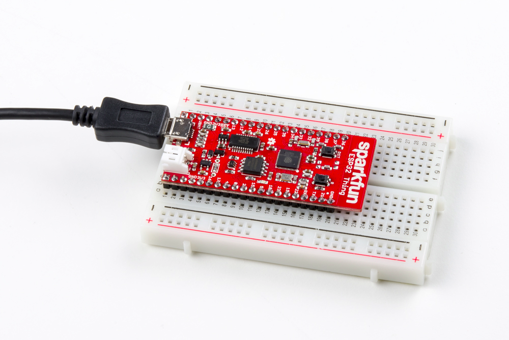
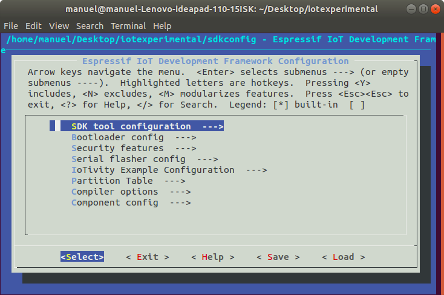
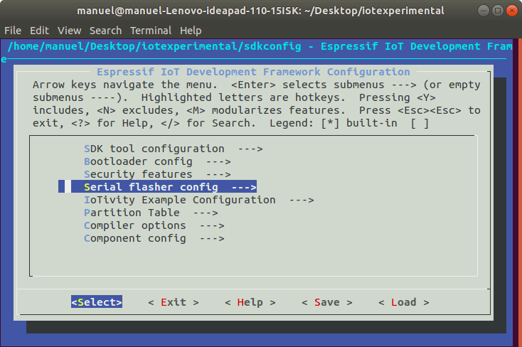
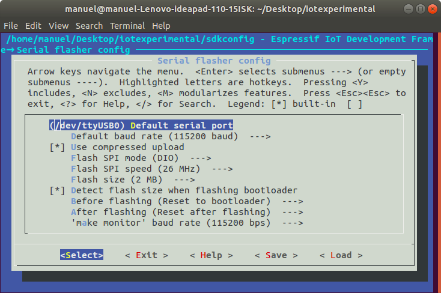
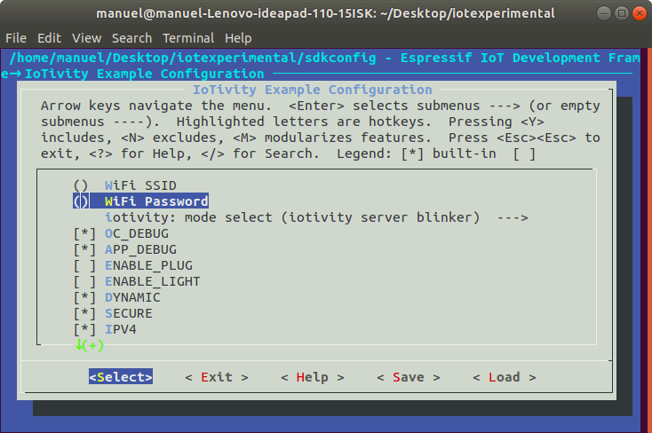
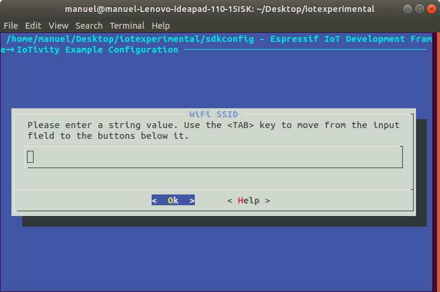
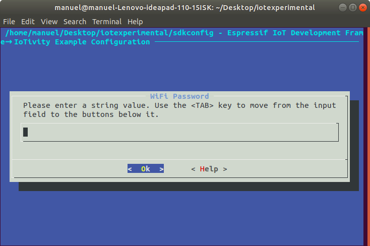
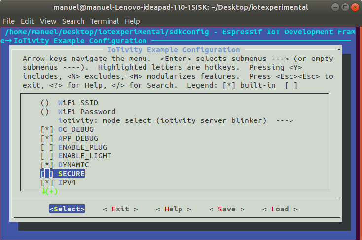
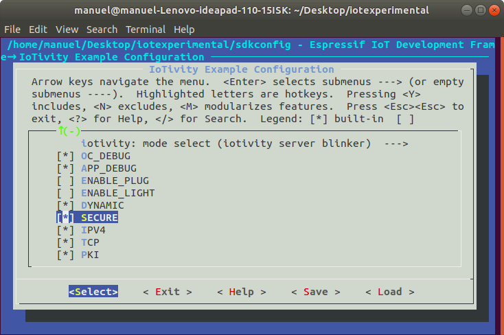

El siguiente manual fue creado para proveer de una pauta para iniciar el desarrollo en dispositivos ESP32 que puedan comunicarse usando el protocolo El protocolo de aplicaciones reducidas (CoAP) (RFC 7252, Junio 2014), usando la plataforma provista por Espressif Systems para el desarrollo en equipos ESP32 y ESP8266 e IoTivity Lite
Se proveerá de un ejemplo base, que actualmente trabaja de forma no segura, pero se planea la implementación de mensajería segura por DTLS.
El ESP32 es un microcontrolador orientado al Internet de las cosas lanzado al mercado por Espressif Systems.
Entre sus características principales están:
Iotivity es un proyecto de código abierto que implementa el estándar de la Open Connectivity Foundation (OCF) para la comunicación entre objetos inteligentes independiente del protocolo. El estándar cuenta con versión 2.0, disponible en esteenlace. La especificación se basa en una arquitectura REST, en la que existe un cliente que puede descubrir e interactuar con recursos en el servidor.
Esta versión es para dispositivos que requieren mayores capacidades de energía y recursos computacionales, para poder acomodar las especificaciones y características obligatorias y opcionales de las especificaciones OCF 2.0 las cuales incluyen:
IoTivity-Lite (también llamado IoTivity-Constrained) es una implementación liviana de los estándares de Open Connectivity Foundation (OCF) para Internet of Things (IoT), el estándar cuenta con la versión 2.0. Para más detalles se puede dirigir a este enlace
Fue diseñado para crear aplicaciones de IoT seguras e interoperables conforme con los estándares de OCF con un espacio limitado que no exceda las necesidades de las especificaciones.
Las aplicaciones de IoT pueden construirse para una amplia variedad de dispositivos ricos y con recursos limitados en todo el entorno de IoT. Como una guía general, debería ser factible implementar aplicaciones en dispositivos con restricciones de clase 2 (> 256KB Flash,> 64KB RAM), o mejor.
En este codelab desarrollarás una aplicación de cliente servidor en la que el servidor es un dispositivo ESP32 el cual está conectado a un recurso del cual se podrá acceder y enviar datos En la aplicación podrá:
|  |
El siguiente instructivo está enfocado para sistemas Linux
$ mkdir IotivityESP32Dentro encontrará una guí provista por Espressif Systems para el soporte OIC/OCF en sistemas ESP
git clone https://github.com/espressif/esp32-iotivity.git
cd esp32-iotivity
git submodule update --init --recursivePara información más detallada, así como respuestas a las preguntas más frecuentes diríjase a este sitio
En Ubuntu/Debian:
sudo apt-get install gcc git wget make libncurses-dev flex bison gperf python python-pip python-setuptools python-serial python-cryptography python-future python-pyparsingEn CentOS 7:
sudo yum install gcc git wget make ncurses-devel flex bison gperf python python2-cryptographyEn Arch:
sudo pacman -S --needed gcc git make ncurses flex bison gperf python2-pyserial python2-cryptography python2-future python2-pyparsingPara crear con esp-idf, necesitará utilizar la cadena de herramientas que provee Espressif Systems, para 64 bits y para 32 bits
Para 64 bits
mkdir -p ~/esp
cd ~/esp
tar -xzf ~/Downloads/xtensa-esp32-elf-linux64-1.22.0-80-g6c4433a-5.2.0.tar.gzPara 32 bits
mkdir -p ~/esp
cd ~/esp
tar -xzf ~/Downloads/xtensa-esp32-elf-linux32-1.22.0-80-g6c4433a-5.2.0.tar.gzLa cadena de herramientas será descargada en el directorio
~/esp/xtensa-esp32-elf/$ sudo gedit ~/.bashrc
Al final del archivo agregar:
export IDF_PATH=~/Documents/esp32-iotivity/esp-idf
export PATH="$HOME/esp/xtensa-esp32-elf/bin:$PATH"
alias get_esp32='export PATH="$HOME/esp/xtensa-esp32-elf/bin:$PATH"' La variable de entorno IDF_PATH=~/Documents/esp32-iotivity/esp-idf es el lugar donde se tiene almacenado el código base obtenido en el paso 1.
export IDF_PATH=~/esp/esp-idf
export PATH="$HOME/esp/xtensa-esp32-elf/bin:$PATH"
Alias get_esp32='export PATH="$HOME/esp/xtensa-esp32-elf/bin:$PATH"'printenv PATH [path_de_esp-idf]Para Ubuntu:
sudo apt-get install git wget make libncurses-dev flex bison gperf python python-pip python-setuptools python-serial python-pyparsingPara Arch:
sudo pacman -S --needed gcc git make ncurses flex bison gperf python2-pyserial python2-pyparsingCentOS 7:
sudo yum install gawk gperf grep gettext ncurses-devel python python-devel automake bison flex texinfo help2man libtoolUbuntu 16.04:
sudo apt-get install gawk gperf grep gettext python python-dev automake bison flex texinfo help2man libtool libtool-binmkdir -p ~/esp
cd ~/espgit clone -b xtensa-1.22.x https://github.com/espressif/crosstool-NG.git
cd crosstool-NG
./bootstrap && ./configure --enable-local && make install./ct-ng xtensa-esp32-elf
./ct-ng build
chmod -R u+w builds/xtensa-esp32-elfDentro del repositorio base se tendrá un árbol de directorios del framework esp-idf con la siguiente forma:
- myProject/
- Makefile
- sdkconfig
- components/ - component1/ - component.mk
- Kconfig
- src1.c
- component2/ - component.mk
- Kconfig
- src1.c
- include/ - component2.h
- main/ - src1.c
- src2.c
- component.mk
- build/En el siguiente apartado hay una explicación más detallada de los componentes que forman el framework esp-idf
La forma de construir un proyecto en ESP-IDF depende del archivo make principal en el que se establecen las dependencias que nuestro proyecto usará, así como de los component.mk files dentro de cada directorio de los componentes.
Dentro de los component.mk files se establecen la ubicación de los headers, los archivos .c, donde estarán los archivos de objetos y las dependencias con otros componentes.
IoTivity Constrained es construido como un componente dentro de nuestro proyecto en ESP-IDF.
La versión actual dentro de IoTivity en el código base corresponde a iotivity-constrained @ 0840e0a, la cual soporta OIC ver. 1.1, la versión actual es la 2.0, por lo tanto para tener el soporte, necesitaremos actualizar el repositorio de IoTivity.
Una vez actualizada, la versión de IoTivity constrained, se deberá cambiar su resectivo component.mk file, para no tener problemas con dependencias y agregar las nuevas funciones como nuevos ports y cambios en archivos de seguridad.
El component file será:
#
# Component Makefile
#
COMPONENT_ADD_INCLUDEDIRS := \
adapter/include \
iotivity-constrained \
iotivity-constrained/include \
iotivity-constrained/messaging/coap \
iotivity-constrained/security \
iotivity-constrained/util \
iotivity-constrained/util/pt \
iotivity-constrained/deps/tinycbor/src
COMPONENT_DIRS :=\
deps/mbdetls/include/mbedtls \
deps/mbedtls/library
COMPONENT_OBJS = \
iotivity-constrained/deps/tinycbor/src/cborencoder.o \
iotivity-constrained/deps/tinycbor/src/cborencoder_close_container_checked.o \
iotivity-constrained/deps/tinycbor/src/cborparser.o \
\
adapter/src/random.o \
adapter/src/storage.o \
adapter/src/clock.o \
adapter/src/ipadapter.o \
adapter/src/abort.o \
adapter/src/debug_print.o \
\
iotivity-constrained/util/oc_etimer.o \
iotivity-constrained/util/oc_list.o \
iotivity-constrained/util/oc_memb.o \
iotivity-constrained/util/oc_mmem.o \
iotivity-constrained/util/oc_process.o \
iotivity-constrained/util/oc_timer.o \
\
iotivity-constrained/api/oc_base64.o \
iotivity-constrained/api/oc_blockwise.o \
iotivity-constrained/api/oc_buffer.o \
iotivity-constrained/api/oc_client_api.o \
iotivity-constrained/api/oc_collection.o \
iotivity-constrained/api/oc_core_res.o \
iotivity-constrained/api/oc_discovery.o \
iotivity-constrained/api/oc_endpoint.o \
iotivity-constrained/api/oc_helpers.o \
iotivity-constrained/api/oc_introspection.o \
iotivity-constrained/api/oc_main.o \
iotivity-constrained/api/oc_network_events.o \
iotivity-constrained/api/oc_rep.o \
iotivity-constrained/api/oc_ri.o \
iotivity-constrained/api/oc_server_api.o \
iotivity-constrained/api/oc_uuid.o \
iotivity-constrained/api/oc_session_events.o \
\
iotivity-constrained/security/oc_acl.o\
iotivity-constrained/security/oc_cred.o\
iotivity-constrained/security/oc_doxm.o\
iotivity-constrained/security/oc_obt.o\
iotivity-constrained/security/oc_pstat.o\
iotivity-constrained/security/oc_store.o\
iotivity-constrained/security/oc_svr.o\
iotivity-constrained/security/oc_roles.o\
iotivity-constrained/security/oc_pki.o\
iotivity-constrained/security/oc_sp.o\
iotivity-constrained/security/oc_certs.o\
iotivity-constrained/security/oc_csr.o\
iotivity-constrained/security/oc_keypair.o\
iotivity-constrained/security/oc_sp.o\
iotivity-constrained/security/oc_tls.o\
\
iotivity-constrained/messaging/coap/coap_signal.o\
iotivity-constrained/messaging/coap/coap.o \
iotivity-constrained/messaging/coap/engine.o \
iotivity-constrained/messaging/coap/observe.o \
iotivity-constrained/messaging/coap/separate.o \
iotivity-constrained/messaging/coap/transactions.o
COMPONENT_SRCDIRS := \
iotivity-constrained/util \
iotivity-constrained/include \
iotivity-constrained/security \
iotivity-constrained/api \
iotivity-constrained/messaging/coap \
iotivity-constrained/deps/tinycbor/src \
adapter/src
Como fue explicado en puntos anteriores se usará el framework oficial de Espressif para manejar la creación de aplicaciones con IoTivity.
Para probar que hemos instalado correctamente los componentes necesarios para usar ESP-IDF y no hay problemas con nuestras variables de entorno, vamos a construir el menú de configuración de la siguiente forma
A continuación en caso de que todo haya sido correctamente instalado aparecerá una ventana de configuración

Para poder observar correctamente los mensajes de debug cuando estemos corriendo nuestra aplicación con flash monitor, en caso de dispositivos hechos por SparkFun se necesita setear el Main XTAL frequency en 26 MHz
Dentro de nuestro proyecto IoTivity Constrained está designado como un componente dentro del directorio iotivity, en el mismo está el directorio adapter en el cual se desarrolla el port así como el adaptador ip para el dispositivo, según las especificaciones en iotivity-constrained/port/oc_config.h
Para empezar vamos a ubicar nuestras aplicaciones en el directorio main, dentro crearemos un directorio para separar nuestra aplicación de las demás que se ubican en ese directorio
Crearemos un archivo C llamado esp32_blinker_server.c.
Dependencias
Para esta aplicación se necesitarán múltiples dependencias dependiendo del rol que se tenga, en este caso se mostrarán las del servidor:
#include <pthread.h>
#include <sys/types.h>
#include <sys/wait.h>
#include <stdio.h>
#include <unistd.h>
#include <stdio.h>
#include "freertos/FreeRTOS.h"
#include "freertos/semphr.h"
#include "freertos/task.h"
#include "freertos/event_groups.h"
#include "nvs.h"
#include "nvs_flash.h"
#include "esp_wifi.h"
#include "esp_event_loop.h"
#include "esp_log.h"
#include "driver/gpio.h"
#include "debug_print.h"
#include "esp_err.h"
#include "security/oc_svr.h"
#include "security/oc_tls.h"
#include "api/oc_events.h"
#include "config.h"
#include "oc_api.h"
#include "port/oc_clock.h"
#include "security/oc_acl.h"
#include "oc_buffer.h"
#include "oc_core_res.h"
#include "security/oc_cred.h"
#include "security/oc_pstat.h"
#include "oc_introspection.h"Explicación:
App_main
Cada proyecto en ESP-IDF contiene una función app_main(void), la cual es llamada y ejecutada de forma perpetua por el ESP32.
Dentro de esta función se generan las Task functions, procedentes de ESP-IDF FreeRTOS la cual es una versión modificada de vanilla FreeRTOS la cual soporta multiprocesamiento simétrico. ESP-IDF FreeRTOS se basa en el port Xtensa de FreeRTOS v8.2.0.
La función xTaskCreate permite crear unatask y agregarla a la lista de espera de task que se vayan a ejecutar.
Función app_main:
void app_main(void)
{
if (nvs_flash_init() != ESP_OK){
print_error("nvs_flash_init failed");
}
pthread_cond_init(&cv, NULL);
print_macro_info();
initialise_wifi();
configuration_set();
if ( xTaskCreate(&start_server, "server_main", 15*1024, NULL, 5, NULL) != pdPASS ) {
print_error("task create failed");
}
//create a queue to handle gpio event from isr
gpio_evt_queue = xQueueCreate(10, sizeof(uint32_t));
//start gpio task
if(xTaskCreate(&gpio_manage, "gpio_task_example", 2048, NULL, 10, NULL)!=pdPASS){
print_error("pins task created failed\n");
};
} Explicación:
Event handler
static esp_err_t event_handler(void *ctx, system_event_t *event)
{
switch (event->event_id) {
case SYSTEM_EVENT_STA_START:
printf("Server started\n");
esp_wifi_connect();
break;
case SYSTEM_EVENT_STA_GOT_IP:
xEventGroupSetBits(wifi_event_group, IPV4_CONNECTED_BIT);
heap_caps_print_heap_info(MALLOC_CAP_32BIT);
printf("got ip new\n");
break;
case SYSTEM_EVENT_STA_DISCONNECTED:
/* This is a workaround as ESP32 WiFi libs don't currently
auto-reassociate. */
esp_wifi_connect();
xEventGroupClearBits(wifi_event_group, IPV4_CONNECTED_BIT);
#ifndef OC_IPV4
xEventGroupClearBits(wifi_event_group, IPV6_CONNECTED_BIT);
#endif
break;
case SYSTEM_EVENT_STA_CONNECTED:
tcpip_adapter_create_ip6_linklocal(TCPIP_ADAPTER_IF_STA);
printf("link local\n");
break;
case SYSTEM_EVENT_GOT_IP6:
xEventGroupSetBits(wifi_event_group, IPV6_CONNECTED_BIT);
break;
default:
break;
}
return ESP_OK;
}Explicación:
Initialize_wifi:
void initialise_wifi(void)
{
wifi_event_group = xEventGroupCreate();
tcpip_adapter_init();
ESP_ERROR_CHECK(esp_event_loop_init(event_handler, NULL) );
wifi_init_config_t cfg = WIFI_INIT_CONFIG_DEFAULT();
ESP_ERROR_CHECK(esp_wifi_init(&cfg));
ESP_ERROR_CHECK(esp_wifi_set_storage(WIFI_STORAGE_RAM));
// _again:
g_wifi_reconnect_flag = true;
wifi_config_t wifi_config;
memset(&wifi_config, 0, sizeof(wifi_config));
memcpy(wifi_config.sta.password, EXAMPLE_WIFI_PASS, strlen(EXAMPLE_WIFI_PASS));
memcpy(wifi_config.sta.ssid, EXAMPLE_WIFI_SSID, strlen(EXAMPLE_WIFI_SSID));
int i;
for(i=strlen(EXAMPLE_WIFI_SSID); i<32; i++) { wifi_config.sta.ssid[i] = '\0'; }
for(i=strlen(EXAMPLE_WIFI_PASS); i<64; i++) { wifi_config.sta.password[i] = '\0'; }
ESP_ERROR_CHECK(esp_wifi_set_mode(WIFI_MODE_STA) );
ESP_ERROR_CHECK(esp_wifi_set_config(ESP_IF_WIFI_STA, &wifi_config) );
ESP_ERROR_CHECK(esp_wifi_start() );
vTaskDelay(5000/portTICK_PERIOD_MS);
ESP_LOGI(TAG, "wifi_init_sta finished.");
ESP_LOGI(TAG, "connect to ap SSID:%s password:%s",
EXAMPLE_WIFI_SSID, EXAMPLE_WIFI_PASS);
}
Explicación:
Variables estáticas
/*********Initialization of POSIX SEMAPHORES***********/
static pthread_mutex_t mutex = PTHREAD_MUTEX_INITIALIZER;
static pthread_cond_t cv = PTHREAD_COND_INITIALIZER;
static bool quit, plugs = false;
/*******Variables used for server&client conections***********/
static EventGroupHandle_t wifi_event_group;
static const int IPV4_CONNECTED_BIT = BIT0;
static const int IPV6_CONNECTED_BIT = BIT1;
static void
signal_event_loop(void)
{
pthread_mutex_lock(&mutex);
pthread_cond_signal(&cv);
pthread_mutex_unlock(&mutex);
}
static void
handle_signal(int signal)
{
(void)signal;
signal_event_loop();
quit = 1;
}start_server:
static int
start_server(void)
{
/*Get IPV4 Adress*/
int init;
tcpip_adapter_ip_info_t ip4_info = { 0 };
struct ip6_addr if_ipaddr_ip6 = { 0 };
ESP_LOGI(TAG, "iotivity server task started");
// wait to fetch IPv4 && ipv6 address
#ifdef OC_IPV4
xEventGroupWaitBits(wifi_event_group, IPV4_CONNECTED_BIT, false, true, portMAX_DELAY);
#else
xEventGroupWaitBits(wifi_event_group, IPV4_CONNECTED_BIT | IPV6_CONNECTED_BIT, false, true, portMAX_DELAY);
#endif
if ( tcpip_adapter_get_ip_info(TCPIP_ADAPTER_IF_STA, &ip4_info) != ESP_OK) {
print_error("get IPv4 address failed");
} else {
ESP_LOGI(TAG, "got IPv4 addr:%s", ip4addr_ntoa(&(ip4_info.ip)));
}
#ifndef OC_IPV4
if ( tcpip_adapter_get_ip6_linklocal(TCPIP_ADAPTER_IF_STA, &if_ipaddr_ip6) != ESP_OK) {
print_error("get IPv6 address failed");
} else {
ESP_LOGI(TAG, "got IPv6 addr:%s", ip6addr_ntoa(&if_ipaddr_ip6));
}
#endif
int ret;
static const oc_handler_t handler = { .init = app_init,
.signal_event_loop = signal_event_loop,
.register_resources = register_resources };
oc_clock_time_t next_event;
#ifdef OC_SECURITY
oc_storage_config("./server_creds");
#endif
ret = oc_main_init(&handler);
if (ret < 0)
return ret;
pthread_mutex_init(&mutex, NULL);
pthread_cond_init(&cv, NULL);
while (quit != true) {
struct timespec ts;
next_event = oc_main_poll();
pthread_mutex_lock(&mutex);
if (next_event == 0) {
pthread_cond_wait(&cv, &mutex);
} else {
ts.tv_sec = (next_event / OC_CLOCK_SECOND);
ts.tv_nsec = (next_event % OC_CLOCK_SECOND) * 1.e09 / OC_CLOCK_SECOND;
pthread_cond_timedwait(&cv, &mutex, &ts);
}
pthread_mutex_unlock(&mutex);
}
oc_main_shutdown();
pthread_cond_destroy(&cv);
pthread_mutex_destroy(&mutex);
return 0;
}
Explicación:
register_resources:
static void
register_resources(void)
{
oc_resource_t *res = oc_new_resource("plug","/plug/1",1,0);
oc_string_t *stringi;
oc_free_string(&(res->name));
oc_new_string(&(res->name), PROTO_INDEP_ID, strlen(PROTO_INDEP_ID));
oc_resource_bind_resource_type(res, "oic.r.switch.binary");
oc_resource_bind_resource_interface(res, OC_IF_RW);
oc_resource_set_default_interface(res, OC_IF_RW);
oc_resource_set_discoverable(res, true);
oc_resource_set_observable(res,true);
oc_resource_set_periodic_observable(res, 1);
oc_resource_set_request_handler(res, OC_GET, get_plug, NULL);
oc_resource_set_request_handler(res,OC_POST,post_plug, NULL);
oc_resource_set_request_handler(res,OC_PUT, put_plug, NULL);
oc_add_resource(res);
}
Explicación:
app_init:
static int
app_init(void)
{
int r = oc_init_platform("Intel", NULL, NULL);
if (r != 0)
return r;
r |= oc_add_device("/oic/d", "oic.d.plug", "Left Wall", "ocf.1.0.0",
"ocf.res.1.0.0", set_device_custom_property, NULL);
oc_str_to_uuid(PROTO_INDEP_ID,oc_core_get_device_id(r));
return r;
}Explicación:
set_device_custom_property:
static void
set_device_custom_property(void *data)
{
(void)data;
oc_set_custom_device_property(purpose, "smart plug");
oc_set_custom_device_property(piid, PROTO_INDEP_ID);
}Explicación:
get_plug:
static void
get_plug(oc_request_t *request, oc_interface_mask_t interface, void *user_data)
{
oc_rep_start_root_object();
PRINT("GET_plug_state request:\n");
switch (interface) {
case OC_IF_BASELINE:
oc_process_baseline_interface(request->resource);
case OC_IF_RW:
oc_rep_set_boolean(root, state, plugs);
break;
default:
break;
}
oc_rep_end_root_object();
oc_send_response(request, OC_STATUS_OK);
PRINT("Plug state %d\n", plugs);
}Explicación:
post_plug:
static void
post_plug(oc_request_t *request, oc_interface_mask_t interface, void *user_data)
{
(void)user_data;
(void)interface;
PRINT("POST PLUG'S STATE:\n");
bool state = false;
double voltage = 0;
oc_rep_t *res = request->request_payload;
while(res!=NULL){
switch(res->type){
case OC_REP_BOOL: //order to plugin or plugout
state = res->value.boolean;
PRINT("ON/OFF PLUG VALUE: %d\n", state);
manage_plug_up_down(state);
break;
case OC_REP_INT:
voltage = res->value.double_p;
PRINT("SETTING PLUG'S VOLTAGE\n");
manage_plug_adc(voltage);
vTaskDelay(50);
break;
default:
oc_send_response(request, OC_STATUS_BAD_REQUEST);
return;
break;
}
res=res->next;
}
oc_send_response(request, OC_STATUS_CHANGED);
plugs =state;
}Explicación:
put_plug:
static void
put_plug(oc_request_t *request, oc_interface_mask_t interface,
void *user_data)
{
post_plug(request, interface, user_data);
}Explicación:
app_init:
static int
app_init(void)
{
int ret = oc_init_platform("Intel Corporation", NULL, NULL);
ret |= oc_add_device("/oic/d", "oic.wk.d", "Generic Client", "ocf.1.0.0",
"ocf.res.1.3.0", NULL, NULL);
return ret;
}Explicación:
issue_request:
static void
issue_request(void)
{
oc_do_ip_discovery("oic.r.plug", &discovery_cb, NULL);
}
Explicación:
discovery_cb:
static oc_discovery_flags_t
discovery_cb(const char *di, const char *uri, oc_string_array_t types,
oc_interface_mask_t interfaces, oc_endpoint_t *server,
oc_resource_properties_t bm, void *user_data)
{
(void)bm;
(void)di;
(void)interfaces;
(void)user_data;
int uri_len = strlen(uri);
int i;
static int pos = 0;
PRINT("ID del device %s\n", di);
uri_len = (uri_len>=MAX_URI_LENGTH)? MAX_URI_LENGTH-2:uri_len;
for (i = 0; i < (int)oc_string_array_get_allocated_size(types); i++) {
int ret;
char *rt = oc_string_array_get_item(types, i);
if (strlen(rt) == 10 && strncmp(rt, "oic.r.plug", 10) == 0){
strncpy(light_1,uri,uri_len);
light_1[uri_len]='\0';
plug_server = server;
PRINT("Resource %s hosted at endpoints:\n", light_1);
oc_endpoint_t *endo = server;
while(endo!=NULL){
PRINTipaddr(*endo);
PRINT("\n");
endo = endo->next;
}
oc_do_observe(light_1, plug_server, NULL, &observe_plug, LOW_QOS, NULL);
oc_set_delayed_callback(NULL, &stop_observe, 15);
PRINT("Get response values of %s al endpoint:\n",light_1);
pos++;
//if (!ret)
//exit(EXIT_FAILURE);
return OC_STOP_DISCOVERY;
}
}
oc_free_server_endpoints(server);
return OC_CONTINUE_DISCOVERY;
}Explicación:
observe_plug:
static void
observe_plug(oc_client_response_t *data){
PRINT("OBSERVING PLUG\n");
oc_rep_t *rep = data->payload;
while (rep != NULL) {
PRINT("key %s, value ", oc_string(rep->name));
switch (rep->type) {
case OC_REP_BOOL:
PRINT("%d\n", rep->value.boolean);
plugs = rep->value.boolean;
break;
default:
break;
}
rep = rep->next;
}
if(oc_init_post(light_1, plug_server, NULL, &post_plug, LOW_QOS, NULL)){
oc_rep_start_root_object();
oc_rep_set_boolean(root, state, plug_state);
oc_rep_end_root_object();
PRINT("DOING POST\n");
if(oc_do_post()){
PRINT("SENT SIGNAL\n");
}else{
PRINT("ERROR\n");
}
}else{
PRINT("CANNOT init POST\n");
}
}Explicación:
post_plug:
static void
post_plug(oc_client_response_t *data){
PRINT("PLUG_STATUS: \n");
if(data->code==OC_STATUS_CHANGED){
PRINT("STATUS CHANGED\n");
}else{
PRINT("RESPONSE IS %d\n",data->code);
}Explicación:
Estando en la terminal podemos acceder al entorno gráfico de configuración con:
Dentro configuraremos las opciones de puerto serial en la sección de Serial flasher config


En este caso se ha designado a /dev/ttyUSSB0 como el puerto serial al que se ha conectado el ESP32
Una vez hecha la configuración para los puertos seriales, se agrega en la opción de construir y flashear la aplicación creada ahora en IoTivity Example Configuration, de la siguiente forma:
menu "IoTivity Example Configuration"
config WIFI_SSID
string "WiFi SSID"
default "myssid"
help
SSID (network name) for the ESP32 to connect to.
config WIFI_PASSWORD
string "WiFi Password"
default "myssid"
help
WiFi password (WPA or WPA2) for the ESP32 to match.
can be blank if the network has no security set.
choice ESP32_IOTIVITY_MODE
prompt "iotivity: mode select"
default IOTIVITY_CLIENT
help
select iotivity mode(client/server/blinker_server).
config IOTIVITY_CLIENT
bool "iotivity client"
config IOTIVITY_SERVER
bool "iotivity server"
config IOTIVITY_SERVER_BLINKER
bool "iotivity server blinker"
endchoice
config OC_DEBUG
bool "OC_DEBUG"
help
enable or disable IoTivity-constrained debug
config APP_DEBUG
bool "APP_DEBUG"
help
enable or disable application debug
config ENABLE_PLUG
bool "ENABLE_PLUG"
help
enable or disable plug options
config ENABLE_LIGHT
bool "ENABLE_LIGHT"
help
enable or disable light
config DYNAMIC
bool "DYNAMIC"
help
enable or disable DYNAMIC
config SECURE
bool "SECURE"
help
enable or disable SECURE
config IPV4
bool "IPV4"
help
enable or disable IPV4
config TCP
bool "TCP"
help
enable or disable TCP
endmenu
Se ha agregado la opción
config IOTIVITY_SERVER_BLINKER
bool "iotivity server blinker"Y la opción blinker_server dentro del modo de selección
choice ESP32_IOTIVITY_MODE
prompt "iotivity: mode select"
default IOTIVITY_CLIENT
help
select iotivity mode(client/server/blinker_server).# "main" pseudo-component makefile.
#
# (Uses default behaviour of compiling all source files in directory, adding 'include' to include path.)
ifdef CONFIG_IOTIVITY_CLIENT
COMPONENT_SRCDIRS += esp32_client
endif
ifdef CONFIG_IOTIVITY_SERVER
COMPONENT_SRCDIRS += esp32_server
endif
ifdef CONFIG_IOTIVITY_SERVER_BLINKER
COMPONENT_SRCDIRS += esp32_blinker_server
endif
COMPONENT_SRCDIRS += esp32_lightbulb
COMPONENT_ADD_INCLUDEDIRS := esp32_lightbulbDentro del archivo escribimos el nombre de nuestro archivo.c el cual puede o no ser el mismo de nuestra app.
En este caso se agregó:
ifdef CONFIG_IOTIVITY_SERVER_BLINKER
COMPONENT_SRCDIRS += esp32_blinker_server
endif
Dentro de iotivity: mode select están las opciones que nosotros queramos agregar
Para configurar la red a la que se conectará nuestro dispositivo, iremos al menú de configuración y dentro de la opción IoTivity Example Configuration definiremos la SSID como la contraseña de la red Wi-Fi


ESP-IDF usa make para la construcción de proyectos en C.
Tiene distintos comandos para configurar, compilar y hacer flash de la aplicación
La forma en que se construirá la aplicación no obstante, requerirá que hagamos configuraciones y cambios dentro de los makefiles y component.mk files de nuestro directorio.
A grandes rasgos el sistema de compilación se maneja de la siguiente manera:
$(IDF_PATH)/make/project.mk makefile en el cual se implementa el resto del sistema de construcción de ESP-IDFmake menuconfig, contiene la configuración para todos los componentes del proyecto e incluso ESP-IDFPara poder setear las banderas de construcción al momento de compilar volvemos a acceder a IoTivity Example Configuration dentro del menú de configuración
Aquí podemos ver opciones como OC_DEBUG, APP_DEBUG, ENABLE_PLUG, ENABLE_LIGHT, DYNAMIC, SECURE, IPV4, entre otros.
Para poder ver que banderas se activan al seleccionar cada opción, podemos acceder a Help.
SECURE=1 incluye la capa de OCF security y mbedTLS.
DEBUG=1 habilita el debug mode con verbose debug output.
TCP=1 incluye el soporte para endpoints de TCP endpoints y CoAP sobre TCP (RFC 8323) (a ser implementado dentro del adapter de ESP32)
IPV4=1 incluye soporte IPv4 en la construcción y excluye IPV6. Excluir IPV4 agrega el soporte IPV6 (a ser implementado soporte para ambos al mismo tiempo)
En este caso si quisiéramos agregar una CFLAG debemos seguir los mismos pasos de la sección IoTivity Example Configuration
Al final del archivo Kconfig.projbuild agregamos:
En el archivo Makefile principal agregamos:
#
# This is a project Makefile. It is assumed the directory this Makefile resides in is a
# project subdirectory.
#
export PROJECT_PATH := $(PWD)
export IDF_PATH ?= $(PWD)/esp-idf
ifeq ($(CLIENT), 1)
PROJECT_NAME := iotivity_client
endif
ifeq ($(SERVER), 1)
PROJECT_NAME := iotivity_server
endif
##
##
ifeq ($(BLINKERCLIENT),1)
PROJECT_NAME := esp32_blinker_client
endif
ifeq ($(BLINKERSERVER),1)
PROJECT_NAME := esp32_blinker_server
endif
PROJECT_NAME ?= esp32_iotivity
include $(IDF_PATH)/make/project.mk
# sdkconfig is included project.mk recursively
# after setting sdkconfig done, start user layer macro define
ifdef CONFIG_IOTIVITY_CLIENT
CFLAGS += -DOC_CLIENT
endif
ifdef CONFIG_IOTIVITY_SERVER
CFLAGS += -DOC_SERVER
endif
ifdef CONFIG_IOTIVITY_CLIENT_BLINKER
CFLAGS += -DOC_CLIENT
endif
ifdef CONFIG_IOTIVITY_SERVER_BLINKER
CFLAGS += -DOC_SERVER
endif
ifdef CONFIG_OC_DEBUG
CFLAGS += -DOC_DEBUG
endif
ifdef CONFIG_APP_DEBUG
CFLAGS += -DAPP_DEBUG
endif
ifdef CONFIG_ENABLE_LIGHT
CFLAGS += -DENABLE_LIGHT
endif
ifdef CONFIG_DYNAMIC
CFLAGS += -DOC_DYNAMIC_ALLOCATION
endif
ifdef CONFIG_SECURE
CFLAGS += -DOC_SECURITY
endif
ifdef CONFIG_IPV4
CFLAGS += -DOC_IPV4
endif
ifdef CONFIG_TCP
CFLAGS += -DOC_TCP
endif
ifdef CONFIG_PKI
CFLAGS += -DOC_PKI
CFLAGS += -DMBEDTLS_X509_EXPANDED_SUBJECT_ALT_NAME_SUPPORT
CFLAGS += -DMBEDTLS_SHA256_C
CFLAGS += -DMBEDTLS_ECP_DP_SECP256R1_ENABLED
CFLAGS += -DMBEDTLS_RSA_C
CFLAGS += -DMBEDTLS_ECDSA_C
CFLAGS += -DMBEDTLS_CERTS_C
endif
Como se puede observar al activar PKI, no solo se agrega la CFLAG OC_PKI, en cambio es posible añadir múltiples CFLAGS con una sola opción
En este caso agregamos
ifdef CONFIG_PKI
CFLAGS += -DOC_PKI
CFLAGS += -DMBEDTLS_X509_EXPANDED_SUBJECT_ALT_NAME_SUPPORT
CFLAGS += -DMBEDTLS_SHA256_C
CFLAGS += -DMBEDTLS_ECP_DP_SECP256R1_ENABLED
CFLAGS += -DMBEDTLS_RSA_C
CFLAGS += -DMBEDTLS_ECDSA_C
CFLAGS += -DMBEDTLS_CERTS_C
endifPara probar nuestra aplicación simplemente desde la consola, una vez conectado nuestro ESP32 al puerto serial y habiendo configurado la red, y las CFLAGS que queremos tener, en este caso se ha dejado la siguiente configuración:

Dentro de la consola escribimos
make BLINKERSERVER=1 flash monitorAgregar BLINKERSERVER=1 no hace nada más que ponerle nombre a nuestra app, más no influye en ningún aspecto de la aplicación, agregar flash monitor nos permite ver en la terminal como actúa la aplicación así como nos facilita el proceso de Debugging
Una vez hecho esto nuestra aplicación ya se habrá cargado en nuestro ESP32 y ya tendremos nuestro dispositivo ESP32 que se comunica usando IoTivity.
Actualmente IoTivity constrained soporta arquitecturas Linux, Contiki, FreeRTOS, RioT, TizenRT, OpenThread, Android y Windows y zephyr.
Las opciones de configuración para una aplicación están seteadas en oc_config.h, la cual debe ser agregada en los include paths.
No obstante la configuración para este proyecto se ha agregado en el archivo config.h dentro del directorio components/iotivity/adapter/src
Nuestro port para ESP32 se ha definido en el directorio components/iotivity/adapter, en él se definirán las configuraciones determinadas en el archivo oc_config.h
La estructura de nuestro directorio adapter es la siguiente
- adapter/
- include/
- config.h
- debug_print.h
- esp_ipconfig.h
- esp32_sys_socket.h
- src/ - abort.c
- clock.c
- debug_print.c
- ipadapter.c
- random.c
- storage.cUna de las partes esenciales para poder adaptar IoTivity es el ipAdapter, ya que en esta parte definiremos las funciones que se encarguen de recibir los paquetes en UDP de forma segura y no segura en la red, determinar los eventos de red, encontrar una ip dentro de la red para el dispositivo, enviar paquetes hacia un cliente o un servidor.
Haciendo uso de las configuraciones en tiempo real establecidas en oc_config.h las cuales se definen nuevamente en config.h
Las funciones principales de IPAdapter son:
int oc_connectivity_init(size_t device) {
OC_DBG("Initializing connectivity for device %d\n", device);
#ifdef OC_DYNAMIC_ALLOCATION
ip_context_t *dev = (ip_context_t *)calloc(1, sizeof(ip_context_t));
if (!dev) {
oc_abort("Insufficient memory");
}
oc_list_add(ip_contexts, dev);
#else /* OC_DYNAMIC_ALLOCATION */
ip_context_t *dev = &devices[device];
#endif /* !OC_DYNAMIC_ALLOCATION */
dev->device = device;
#ifndef OC_IPV4
dev->device = device;
OC_LIST_STRUCT_INIT(dev, eps);
memset(&dev->mcast, 0, sizeof(struct sockaddr_storage));
memset(&dev->server, 0, sizeof(struct sockaddr_storage));
struct sockaddr_in6 *m = (struct sockaddr_in6 *)&dev->mcast;
m->sin6_family = AF_INET6;
m->sin6_port = htons(OCF_PORT_UNSECURED);
m->sin6_addr = in6addr_any;
int err = 0;
struct ip6_addr if_ipaddr = { 0 };
struct sockaddr_in6 *l = (struct sockaddr_in6 *)&dev->server;
l->sin6_family = AF_INET6;
err = tcpip_adapter_get_ip6_linklocal(TCPIP_ADAPTER_IF_STA, &if_ipaddr);
if (err != ESP_OK) {
print_error("get ip6 ret:%d\n", err);
}
inet6_addr_from_ip6addr(&l->sin6_addr, &if_ipaddr);
l->sin6_port = 0;
#ifdef OC_SECURITY
memset(&dev->secure, 0, sizeof(struct sockaddr_storage));
struct sockaddr_in6 *sm = (struct sockaddr_in6 *)&dev->secure;
sm->sin6_family = AF_INET6;
sm->sin6_port = htons(OCF_PORT_SECURE);
//sm->sin6_port = 0;
sm->sin6_addr = in6addr_any;
#endif /* OC_SECURITY */
dev->server_sock = socket(AF_INET6, SOCK_DGRAM, IPPROTO_UDP);
dev->mcast_sock = socket(AF_INET6, SOCK_DGRAM, IPPROTO_UDP);
if (dev->server_sock < 0 || dev->mcast_sock < 0) {
OC_ERR("creating server sockets\n");
return -1;
}
#ifdef OC_SECURITY
dev->secure_sock = socket(AF_INET6, SOCK_DGRAM, IPPROTO_UDP);
if (dev->secure_sock < 0) {
OC_ERR("creating secure socket\n");
return -1;
}
#endif /* OC_SECURITY */
int opt = 1;
if (setsockopt(dev->server_sock, IPPROTO_IPV6, IPV6_RECVPKTINFO, &opt,
sizeof(opt)) == -1) {
OC_ERR("setting recvpktinfo option %d\n", errno);
return -1;
}
if (setsockopt(dev->server_sock, IPPROTO_IPV6, IPV6_V6ONLY, &opt,
sizeof(opt)) == -1) {
OC_ERR("setting sock option %d\n", errno);
return -1;
}
if (setsockopt(dev->server_sock, SOL_SOCKET, SO_REUSEADDR, &opt, sizeof(opt)) ==
-1) {
OC_ERR("setting reuseaddr option %d", errno);
return -1;
}
if (bind(dev->server_sock, (struct sockaddr *)&dev->server,
sizeof(dev->server)) == -1) {
OC_ERR("binding server socket %d\n", errno);
return -1;
}
socklen_t socklen = sizeof(dev->server);
if (getsockname(dev->server_sock, (struct sockaddr *)&dev->server,
&socklen) == -1) {
OC_ERR("obtaining server socket information %d\n", errno);
return -1;
}
dev->port = ntohs(l->sin6_port);
if (configure_mcast_socket(dev->mcast_sock, AF_INET6) < 0) {
return -1;
}
int reuse = 1;
if (setsockopt(dev->mcast_sock, IPPROTO_IPV6, IPV6_RECVPKTINFO, &reuse,
sizeof(reuse)) == -1) {
OC_ERR("setting recvpktinfo option %d\n", errno);
return -1;
}
if (setsockopt(dev->mcast_sock, SOL_SOCKET, SO_REUSEADDR, &reuse,
sizeof(reuse)) == -1) {
OC_ERR("setting reuseaddr option %d\n", errno);
return -1;
}
if (bind(dev->mcast_sock, (struct sockaddr *)&dev->mcast,
sizeof(dev->mcast)) == -1) {
OC_ERR("binding mcast socket %d\n", errno);
return -1;
}
#ifdef OC_SECURITY
if (setsockopt(dev->secure_sock, IPPROTO_IPV6, IPV6_RECVPKTINFO, &on,
sizeof(on)) == -1) {
OC_ERR("setting recvpktinfo option %d\n", errno);
return -1;
}
if (setsockopt(dev->secure_sock, SOL_SOCKET, SO_REUSEADDR, &reuse,
sizeof(reuse)) == -1) {
OC_ERR("setting reuseaddr option %d\n", errno);
return -1;
}
if (bind(dev->secure_sock, (struct sockaddr *)&dev->secure,
sizeof(dev->secure)) == -1) {
OC_ERR("binding IPv6 secure socket %d\n", errno);
return -1;
}
socklen = sizeof(dev->secure);
if (getsockname(dev->secure_sock, (struct sockaddr *)&dev->secure,
&socklen) == -1) {
OC_ERR("obtaining secure socket information %d\n", errno);
return -1;
}
dev->dtls_port = ntohs(sm->sin6_port);
#endif /* OC_SECURITY */
#endif
#ifdef OC_IPV4
if (connectivity_ipv4_init(dev) != 0) {
OC_ERR("Could not initialize IPv4\n");
}
#endif /* OC_IPV4 */
if (pthread_create(&dev->event_thread, NULL, &network_event_thread, dev) !=
0) {
OC_ERR("creating network polling thread\n");
return -1;
}
OC_DBG("=======ip port info.========");
OC_DBG(" ipv6 port : %u", dev->port);
#ifdef OC_SECURITY
OC_DBG(" ipv6 secure : %u", dev->dtls_port);
#endif
#ifdef OC_IPV4
OC_DBG(" ipv4 port : %u", dev->port4);
#ifdef OC_SECURITY
OC_DBG(" ipv4 secure : %u", dev->dtls4_port);
#endif
#endif
OC_DBG("Successfully initialized connectivity for device %d\n", device);
return 0;
}
En esta función empezamos la conexión y la estructura de los sockets en el caso si se hará tanto en IPV4 como en IPV6, se definen los ports para conexión simple y conexión de forma segura
oc_endpoint_t *
oc_connectivity_get_endpoints(size_t device)
{
(void)device;
ip_context_t *dev = get_ip_context_for_device(device);
if (!dev) {
return NULL;
}
oc_init_endpoint_list();
oc_endpoint_t ep;
oc_endpoint_t sec;
memset(&sec,0,sizeof(oc_endpoint_t));
memset(&ep, 0, sizeof(oc_endpoint_t));
int err = 0;
#ifdef OC_IPV4
ep.flags = IPV4;
ep.addr.ipv4.port = OCF_PORT_UNSECURED;
tcpip_adapter_ip_info_t sta_ip;
err = tcpip_adapter_get_ip_info(TCPIP_ADAPTER_IF_STA, &sta_ip);
if (err != ESP_OK) {
print_error("get ipv4 failed,ret:%d\n", err);
}
memcpy(ep.addr.ipv4.address, &sta_ip.ip, 4);
#ifdef OC_SECURITY
ep.flags |= SECURED;
#endif
// IPv6
ep.flags = IPV6;
ep.addr.ipv6.port = OCF_PORT_UNSECURED;
struct ip6_addr if_ipaddr = { 0 };
err = tcpip_adapter_get_ip6_linklocal(TCPIP_ADAPTER_IF_STA, &if_ipaddr);
if (err != ESP_OK) {
print_error("get ipv6 failed,ret:%d\n", err);
}
memcpy(ep.addr.ipv6.address, if_ipaddr.addr, 16);
#ifdef OC_TCP
ep.flags |= TCP;
#endif
ep.device = 0;
oc_add_endpoint_to_list(&ep);
#ifdef OC_SECURITY
#ifdef OC_IPV4
sec.flags = IPV4;
sec.addr.ipv4.port = OCF_PORT_SECURE;
tcpip_adapter_ip_info_t sta_i;
err = tcpip_adapter_get_ip_info(TCPIP_ADAPTER_IF_STA, &sta_i);
if (err != ESP_OK) {
print_error("get ipv4 failed,ret:%d\n", err);
}
memcpy(sec.addr.ipv4.address, &sta_i.ip, 4);
#endif // IPv6
sec.flags = IPV6;
sec.addr.ipv6.port = OCF_PORT_SECURE;
struct ip6_addr if_ipadd = { 0 };
err = tcpip_adapter_get_ip6_linklocal(TCPIP_ADAPTER_IF_STA, &if_ipadd);
if (err != ESP_OK) {
print_error("get ipv6 failed,ret:%d\n", err);
}
memcpy(sec.addr.ipv6.address, if_ipadd.addr, 16);
#endif
#ifdef OC_TCP
sec.flags |= TCP;
#endif
sec.flags |= SECURED;
sec.device = 0;
oc_add_endpoint_to_list(&sec);
#endif
#ifdef OC_TCP
oc_endpoint_t sectcp;
memset(§cp,0,sizeof(oc_endpoint_t));
#ifdef OC_IPV4
sectcp.flags = IPV4;
sectcp.addr.ipv4.port = OCF_PORT_TCP;
tcpip_adapter_ip_info_t sta_iptcp;
err = tcpip_adapter_get_ip_info(TCPIP_ADAPTER_IF_STA, &sta_iptcp);
if (err != ESP_OK) {
print_error("get ipv4 failed,ret:%d\n", err);
}
memcpy(sectcp.addr.ipv4.address, &sta_iptcp.ip, 4);
#ifdef OC_SECURITY
sectcp.flags |= SECURED;
#endif
#else
sectcp.flags = IPV6;
sectcp.addr.ipv6.port = OCF_PORT_TCP+1;
struct ip6_addr if_ipaddtcp = { 0 };
err = tcpip_adapter_get_ip6_linklocal(TCPIP_ADAPTER_IF_STA, &if_ipaddtcp);
if (err != ESP_OK) {
print_error("get ipv6 failed,ret:%d\n", err);
}
memcpy(sectcp.addr.ipv6.address, if_ipaddtcp.addr, 16);
#endif
sectcp.flags |= TCP;
sectcp.device = 0;
oc_add_endpoint_to_list(§cp);
#endif
#ifdef OC_TCP
oc_endpoint_t nosectcp;
memset(&nosectcp,0,sizeof(oc_endpoint_t));
#ifdef OC_IPV4
nosectcp.flags = IPV4;
nosectcp.addr.ipv4.port = OC_PORT_TCP_UNSECURE;
tcpip_adapter_ip_info_t sta_iptcpno;
err = tcpip_adapter_get_ip_info(TCPIP_ADAPTER_IF_STA, &sta_iptcpno);
if (err != ESP_OK) {
print_error("get ipv4 failed,ret:%d\n", err);
}
memcpy(nosectcp.addr.ipv4.address, &sta_iptcpno.ip, 4);
#else
nosectcp.flags = IPV6;
nosectcp.addr.ipv6.port = OC_PORT_TCP_UNSECURE;
struct ip6_addr if_ipaddtcpno = { 0 };
err = tcpip_adapter_get_ip6_linklocal(TCPIP_ADAPTER_IF_STA, &if_ipaddtcpno);
if (err != ESP_OK) {
print_error("get ipv6 failed,ret:%d\n", err);
}
memcpy(nosectcp.addr.ipv6.address, if_ipaddtcpno.addr, 16);
#endif
nosectcp.flags |= TCP;
nosectcp.device = 0;
oc_add_endpoint_to_list(&nosectcp);
#endif
return oc_get_endpoint_list();
}En esta función se definen los puertos donde se establecerán las conexiones seguras, no seguras, de CoAP, CoAPs, CoAP+TCP y CoAPs+TCP, para el dispositivo actual diferenciando si es para IPV4 o IPV6
Las variables OCF_PORT_SECURE y OCF_PORT_INSECURE se definieron previamente en el mismo archivo como variables estáticas
Los dispositivos que se comunican con IoTivity de forma segura lo hacen por medio de una conexión DTLS, usando la librería mbed TLS v2 como base de la implementación de la capa de seguridad.
En las siguientes secciones para poder probar y hacer un mejor debugging de nuestras aplicaciones haremos uso de una herramienta desarrollada por la Open Connectivity Foundation
OCF device Spy si está en un ambiente de Windows, o un cliente genérico si está en un ambiente de Linux.
Si se tiene Android 5.1 + puede instalar el cliente genérico
Con estas herramientas podremos ver paso a paso el proceso de comunicación segura con dispositivos con IoTivity.
El primer paso es el onboarding, se obtienen datos sobre la propiedad del dispositivo, en caso de no tener propietario, se determina quién es el dueño del dispositivo. Usualmente el dueño original es el fabricante y el actual es quien adquiere el dispositivo
Se establecen los valores necesarios para mantener conexión segura con el dispositivo. Entre esta información se encuentran los access control entries (ACEs) que son recursos ubicados en el access control list (aclist2), que definen los permisos de acceso a los recursos. Cada ACE puede dar permisos por tipo de conexión (conntype), rol, o por un dispositivo en específico (UUID). Si es por conntype, esta puede ser anónima y sin encriptar (anon-clear) o autenticada y encriptada (auth-crypt).
Una vez hecho el provisioning el objeto de IoTivity tendrá una forma de verificar la identidad de aquel que quiera accederlo, tendrá que comunicarse de manera autenticada por ejemplo, por medio de claves compartidas.
Para probar la aplicación con seguridad activada hay que ir al menú de configuración y setear la opción de seguridad y PKI en la sección de IoTivity Example Configuration

Una vez hecho esto construiremos nuevamente la aplicación:
Make BLINKERSERVER=1 flash monitorDespués vamos a realizar las acciones de aprovisionamiento y envío de request por medio de nuestra herramienta de la OTCG
Dentro de los planes a futuros están actualizar la versión de ESP-IDF utilizado así como implementar un adaptador para habilitar ports de CoAP+TCP y CoAPS+TCP
Habilitar comunicación segura por medio de DTLS.
En los siguientes enlaces puedes acceder a sitios relacionados con los temas tratados en el codelab.